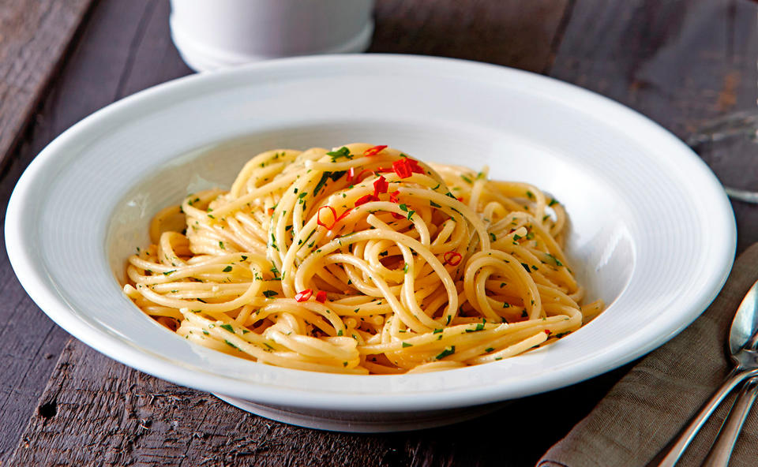

An all time classic if you did not go to the groceries!
An easy and quickly created symphony based on olive oil and pepper.
Enjoy the italian flair in a matter of minutes.
Ingredients
- one pack of quality pasta (preferably spaghetti)
- a considerable amount of olive oil (extra vergine and not the cheap stuff!)
- sea salt (also not only a little bit)
- pepper (and please freshly grinded)
- basil (The green, living plant. No dried stuff!)
- garlic (fresh for sure)
- some parmigiano reggiano
- one fresh red chilly
Instructions
- Boil some water, just enough, and season to taste with salt.
- Add your spaghetti to the boiling water.
- Preheat a pan and place a generous amount of oil in it. As soon as you can smell the olive oil, reduce the heat to a minimum.
- In the meantime, cut the chilly in to fine slices. Having a sharp knive helps alot.
- Do the same to the garlic and place both in the now hot olive oil.
- Now your pasta should be al dente and you place it in the oil, too.
- Season with freshly grinded pepper to taste and give it a good stir. Pro Tip: A splash of starchy pasta water gives it a twist and some creamy texture)
- Now quickly chop the basil, place the pasta on a plate and garnish with basil and parmigiano.
Return to top
Return to main page